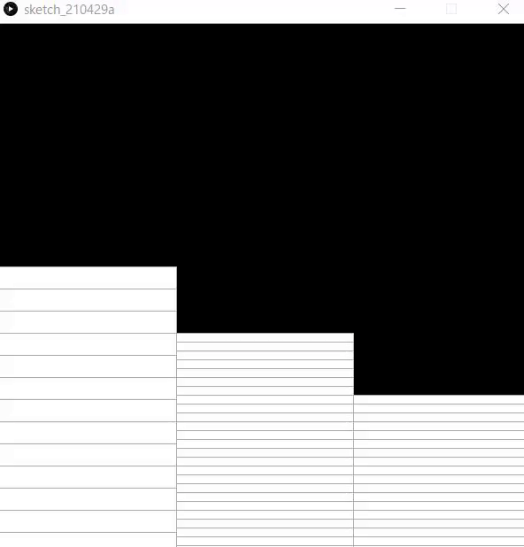
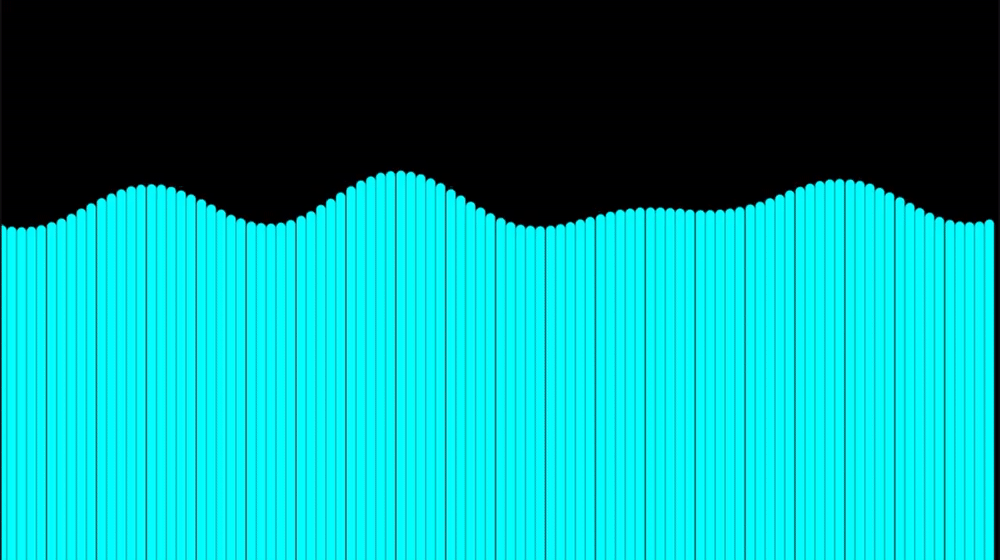
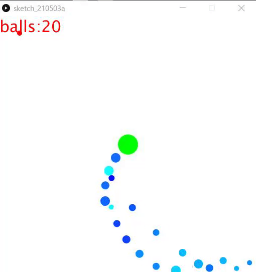
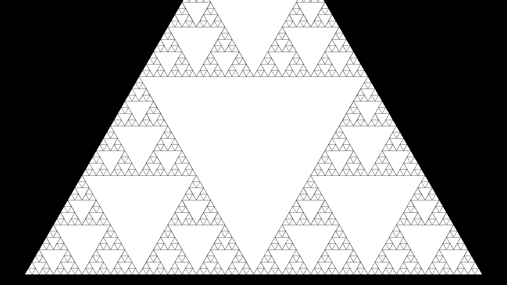
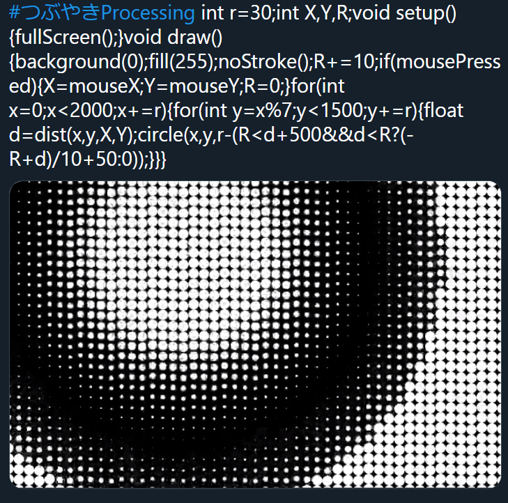

サンプルプログラム
全てShibaken28によって書かれました．一部コードの可読性が著しく低いものがあります．
時計

ソースコード
void setup(){
size(600,600);
}
void draw(){
fill(0);
rect(0,0,width,height);
int hy=height/24;
int my=height/60;
int sy=height/60;
stroke(170);
fill(255);//白色
for(int i=1;i<=hour();i++)rect(0,600-hy*i,200,hy);
for(int i=1;i<=minute();i++)rect(200,600-my*i,200,my);
for(int i=1;i<=second();i++)rect(400,600-sy*i,200,sy);
}
歪み

ソースコード
int r=40;
void setup(){fullScreen();}
void draw(){
clear();noStroke();
float X=mouseX,Y=mouseY;
for(int x=0;x<=width;x+=r){
for(int y=0;y<=height;y+=r){
float tx=x,ty=y,d=PI/2;
float dx=X-x,dy=Y-y;
float l=sqrt(dx*dx+dy*dy);
if(X-x!=0)d=atan(dy/dx);
else if(Y>y)d=-d;
if(X-x>0)d=d-PI;
tx+=cos(d)*r*log(l);ty+=sin(d)*r*log(l);
circle(tx,ty,r);
}
}
}
波

ソースコード
int w=100;
float wave[]=new float[w];
float y=400;
float t=0;
float x;
void setup(){
fullScreen();
x=displayWidth;
}
void draw(){
float ww=x/w;
background(0);
strokeWeight(ww-1);
stroke(0,255,255);
for(int i=0;i<w;i++){
wave[i]=0;
float T=120,la=630;
float A=25;
wave[i]+=A*sin(2*PI*(t/T-i*ww/la));
T=70;la=450;
A=30;
wave[i]+=A*sin(2*PI*(t/T-i*ww/la));
T=-200;la=1050;
A=20;
wave[i]+=A*sin(2*PI*(t/T-i*ww/la));
line(i*ww,wave[i]+y,i*ww,displayHeight);
}
t++;
}
波動

ソースコード
int r=30;
int X, Y, R;
void setup() {
fullScreen();
}
void draw() {
background(0);
fill(255);
noStroke();
R+=10;
if (mousePressed) {
X=mouseX;
Y=mouseY;
R=0;
}
for (int x=0; x<2000; x+=r) {
for (int y=x%7; y<1500; y+=r) {
float d=dist(x, y, X, Y);
circle(x, y, r-(R<d+500&&d<R?(-R+d)/10+50:0));
}
}
}
弾幕避け

ソースコード
class Point{
float x;
float y;
float d;
float s;
float far;
float r;
int t_f=1;
color col;
Point(float p,float q,float t,float v,float h,color c)
{
x=p;
y=q;
d=t;
s=v;
r=h;
col=c;
}
void go(float p,float q,float t,float v,float h)
{
x=p;
y=q;
d=t;
s=v;
r=h;
}
void move()
{
if(s!=0){
x=x+cos(radians(d))*s;
y=y+sin(radians(d))*s;
}
}
void hit()
{
if(time>10)
{
far=sqrt((mouseX-x)*(mouseX-x)+(mouseY-y)*(mouseY-y));
if(far<5){t_f=0;}else{t_f=1;}
}
}
void away()
{
if(x>width){d=180-d;}
else if(x<0){d=180-d;}
else if(y>height){d=-d;}
else if(y<0){d=-d;}
}
}
Point[] zahyo=new Point[512];
int use_n=0;
int rad=0;
int level=1;
float time=0;
float speed=3;
int hankei=10;
int ran=0;
void setup()
{
size(512,512);
background(200);
noStroke();
for(int i=0; i<zahyo.length ;i++)
{
zahyo[i]=new Point(-64,-64,0,0,-1,color(i,random(255),255));
}
run();
}
void draw()
{
fill(255,255,255);
rect(0,0,width,height);
fill(0,0,0);
for(int i=0; i<zahyo.length ;i++)
{
fill(zahyo[i].col);
zahyo[i].move();
zahyo[i].away();
ellipse(zahyo[i].x,zahyo[i].y,zahyo[i].r,zahyo[i].r);
}
fill(0,255,0);
ellipse(width/2,height/2,40,40);
fill(255,0,0);
ellipse(mouseX,mouseY,10,10);
for(int i=0; i<zahyo.length ;i++)
{
zahyo[i].hit();
if(zahyo[i].t_f==0)
{
noLoop();
textSize(64);
text("GAME OVER", 0, 300);
}
}
time += 1;
textSize(32);
text("balls:"+level, 00, 32);
if (time/(20-level/15)==int(time/(20-level/15)))
{
level+=1;
run();
}
}
void incuse()
{
zahyo[use_n].go(width/2,height/2,rad,speed,hankei);
use_n += 1;
if (use_n>=zahyo.length){use_n=0;}
}
void run()
{
speed=1.5;
hankei=10+int(random(0,10));
rad+=7;
zahyo[use_n].go(width/2,height/2,rad,speed,hankei);
incuse();
}
カージオイド

ソースコード
float t=0,x,y;
void setup(){fullScreen();x=displayWidth/2;y=displayHeight/2;}
void draw(){
clear();stroke(255);strokeWeight(3);
for(float i=0;i<6.28;i+=.0523){
float r=200*(1+cos(i)*sin(t)*2),s=200*(1+cos(i+.0523)*sin(t)*2);
for(float j=0;j<6.28;j+=0.419)line(x+r*cos(i+j),y+r*sin(i+j),x+s*cos(i+.0523+j),y+s*sin(i+.0523+j));
}t+=.03;
}
フラクタル

ソースコード
float t=1;
int cnt=0;
void setup(){
fullScreen();
}
void d(float cx,float cy,float s,int c,float rd){
cnt++;
int r=255,g=255,b=255;
fill(r,g,b);
float x1=cx+cos(0+rd)*s,y1=cy+sin(0+rd)*s;
float x2=cx+cos(PI*2/3+rd)*s,y2=cy+sin(PI*2/3+rd)*s;
float x3=cx+cos(PI*4/3+rd)*s,y3=cy+sin(PI*4/3+rd)*s;
triangle(x1,y1,x2,y2,x3,y3);
s/=2;
x1=cx+cos(0+rd)*s;y1=cy+sin(0+rd)*s;
x2=cx+cos(PI*2/3+rd)*s;y2=cy+sin(PI*2/3+rd)*s;
x3=cx+cos(PI*4/3+rd)*s;y3=cy+sin(PI*4/3+rd)*s;
if(c>0){
//d(cx,cy,s,c-1,rd);
d(x1,y1,s,c-1,rd);
d(x2,y2,s,c-1,rd);
d(x3,y3,s,c-1,rd);
}
}
void draw(){
cnt=0;
textSize(100);
background(0);
fill(255);
d(displayWidth/2,displayHeight/2,1000,6,PI/6);
t=PI/3;
}
ほかの作品
OpenProcessing
OpenProcessingというサイトにはProcessingを使用した作品が投稿されています
つぶやきProcessing

一つのツイートに収まるソースコードで作品を作る，#つぶやきProcessing というハッシュタグが存在します．ハッシュタグを検索すれば作品がたくさん出てきます．また，ハッシュタグさえ付ければ誰でも投稿が可能なので挑戦してみるのも良いでしょう．
次のプログラムはつぶやきProcessingの例です．
float t,e,i,j;void setup(){size(900,600);}void draw(){t+=.017;e+=.1;clear();noStroke();for(i=0;i<32;i++)for(j=1;j<5;j++){float d=1-j/25,c=i*0.196+t*(2+j/3);float x=cos(c)*100*j,y=sin(c)*100*j;ellipse(450+x*cos(e/j)+y*sin(d)*sin(e/j),300+y*cos(d),10*j,10*j);}}
このような数式などを使った幾何学的な作品はジェネラティブアート(Generative Art)と呼びます．Processingはジェネラティブアートをするのに手軽な言語です．